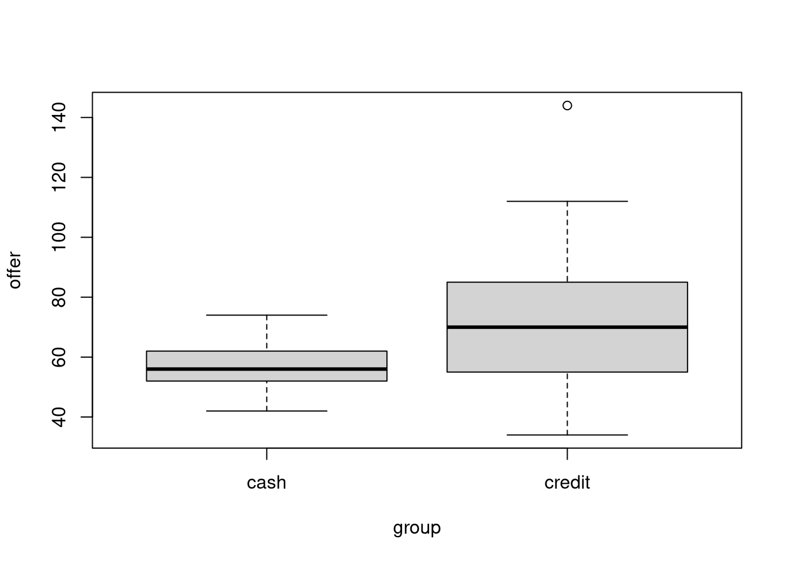
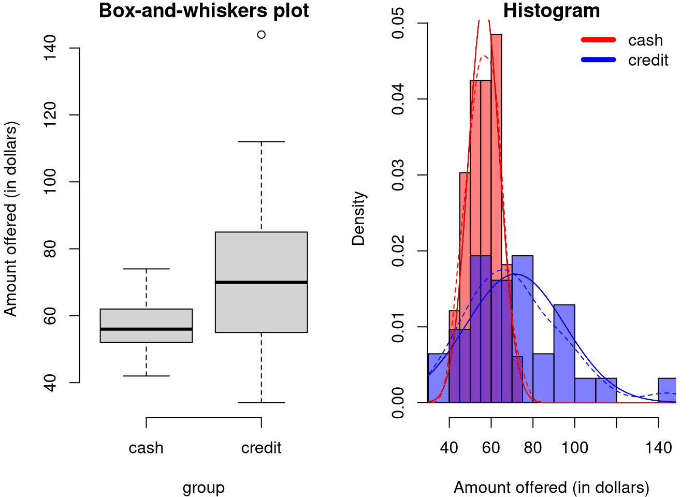

2.2 Two-sample t-test
We use the same example covered in slides for the tickets data. Since the research question is “Does paying by credit card encourage consumers to pay more?”, this calls for a one sided test, with \(\mathscr{H}_1: \mu_{\text{cred}} > \mu_{\text{cash}}\) and de facto the null hypothesis must be \(\mathscr{H}_0: \mu_{\text{cred}} \leq \mu_{\text{cash}}\). The alternative hypothesis is the one we would be interested in checking, but because we are the Devil’s advocate, the null hypothesis is the opposite and includes all other possibilities. Note that we only need to consider the case \(\mu_{\text{cred}} = \mu_{\text{cash}}\) (why?), so one often write this as the null hypothesis.
We can start by loading the data and preliminary visual inspection. In light of the boxplot, it seems that the variance in the two groups differs.
url <- "https://lbelzile.bitbucket.io/MATH60619A/tickets.txt"
tickets <- read.table(url, header = TRUE) #load data
head(tickets) #print first six lines## offer group
## 1 62 cash
## 2 44 cash
## 3 46 cash
## 4 48 cash
## 5 50 cash
## 6 58 cash
tickets$group <- factor(x = tickets$group, #cast binary to categ
labels = c("cash","credit")) #assign meaningful
# summarize data by group (equivalent of PROC MEANS in SAS)
with(data = tickets, #use data
expr = by(data = offer, FUN = summary, INDICES = group))## group: cash
## Min. 1st Qu. Median Mean 3rd Qu. Max.
## 42 52 56 57 62 74
## ------------------------------------------------------------
## group: credit
## Min. 1st Qu. Median Mean 3rd Qu. Max.
## 34 55 70 72 85 144## group: cash
## [1] 7.5
## ------------------------------------------------------------
## group: credit
## [1] 24The option header = TRUE specifies that the first line of the file contains the name of the variables. While read.table is the default for command to read tables (with options sep for the separator, we will also encounter read.csv for comma-separated values. The data is stored in a data.frame object. The command str gives a description of the observations (with the type) and head prints the first lines. Other relevant commands include ndim, nrow and ncol that give the dimensions of the data, the number of rows and the number of columns, respectively.
Reference to the columns of a data frame is made using their column names (colnames(tickets)) using $, so tickets$group returns the second column with the binary variable. Alternatively, we can use the attach command to attach the dataset, in which case the variables are now accessible directly. Beware with this, as there is a risk of having multiple objects with the same name. A good practice is to detach the dataset after use.
When we load a dataset, the default option for strings is to cast them to factor (i.e., categorical variables). We do this likewise for the binary variables, even if in this case this makes no difference (but it is good practice).
Summary statistics showed that the mean amount offered for tickets is 56.61 (7.5) for the group paying by cash and 71.61 (23.6), but we need to perform a test in order to know whether such a difference, -15.01, is significative. Since our null hypothesis is that customers are willing to pay more by credit card, we perform a one-sided \(t\)-test.
ttest <- t.test(formula = offer ~ group,
data = tickets,
alternative = "less", #one-sided
var.equal = TRUE) #by default FALSE
print(ttest)##
## Two Sample t-test
##
## data: offer by group
## t = -3, df = 62, p-value = 0.0005
## alternative hypothesis: true difference in means is less than 0
## 95 percent confidence interval:
## -Inf -7.8
## sample estimates:
## mean in group cash mean in group credit
## 57 72In R, the default option for the function t.test is Welch’s test (var.equal = FALSE), since the latter is valid whether or not the variance of the two groups are equal. The value of the test statistic is -3.48, which should follow a Student \(t\) distribution under \(H_0\) with degrees of freedom, leading to a \(p\)-value smaller than \(10 \times 10^{-3}\). We reject the null at level \(\alpha=0.05\) in favor of the alternative that people paying by credit card are willing to spend more than those paying by cash with the lower bound of the 95% confidence interval for this difference being -7.8.
The equality test for the variance is not calculated directly by t.test in R, but the function var.test implements an \(F\) test for this hypothesis (Levene’s test is in car::leveneTest). We have overwhelming evidence that the variance for the two groups are unequal, so we can should Welch’s test rather that the two-sample \(t\)-test. The conclusions are the same in this case, namely that such a difference is implausible if the true average were equal.
##
## F test to compare two variances
##
## data: offer by group
## F = 0.1, num df = 32, denom df = 30, p-value = 6e-09
## alternative hypothesis: true ratio of variances is not equal to 1
## 95 percent confidence interval:
## 0.05 0.21
## sample estimates:
## ratio of variances
## 0.1## Levene's Test for Homogeneity of Variance (center = median)
## Df F value Pr(>F)
## group 1 16.4 0.00014 ***
## 62
## ---
## Signif. codes: 0 '***' 0.001 '**' 0.01 '*' 0.05 '.' 0.1 ' ' 1##
## Welch Two Sample t-test
##
## data: offer by group
## t = -3, df = 36, p-value = 0.0009
## alternative hypothesis: true difference in means is less than 0
## 95 percent confidence interval:
## -Inf -7.5
## sample estimates:
## mean in group cash mean in group credit
## 57 72It now remains to check the normality assumption graphically; SAS prints histograms with superimposed densities and box-and-whiskers plots. We can also add quantile-quantile plots; the basic function is qqnorm in R and qqline adds a line passing through the first and third quartile, but we use the qqPlot function from the car package instead, since the latter includes a grid in the background and simulated approximate 95% pointwise confidence intervals. The discreteness of the observations in the cash group is visible (corresponding to horizontal segments). Here, due to large enough sample sizes, we have no evidence against normality even if the variances are obviously different.
par(mfrow = c(1,2), mar = c(4,4,1,1)) #change margins,
# mfrow = c(1,2) gives two plots side by side
boxplot(offer ~ group, data = tickets,
main = "Box-and-whiskers plot",
ylab = "Amount offered (in dollars)",
frame = FALSE)
# Histogram
# Attach dataset - variables (columns) are now visible
# avoids having tickets$group everywhere, now group
attach(tickets)
hist(x = offer[group == "cash"],
breaks = 10,
xlim = range(offer),
freq = FALSE, # density scale
xlab = "Amount offered (in dollars)",
main = "Histogram",
col = rgb(1, 0, 0, 0.5))
#Add the second group to the plot
hist(x = offer[group == "credit"],
breaks = 10,
add = TRUE,
freq = FALSE,
col = rgb(0, 0, 1, 0.5))
legend(x = "topright",
col = c("red", "blue"),
legend = c("cash", "credit"),
bty = "n",
lwd = 5)
#superimpose density lines
lines(density(offer[group == "cash"]),
lty = 2,
col = "red")
lines(density(offer[group == "credit"]),
lty = 2,
col = "blue")
# Add normal density lines
lines(curve(dnorm(x,
mean = mean(offer[group == "cash"]),
sd = sd(offer[group == "cash"])),
from = 30,
to = 150,
add = TRUE),
col = "red")
lines(curve(dnorm(x,
mean = mean(offer[group == "credit"]),
sd = sd(offer[group == "credit"])),
from = 30,
to = 150,
add = TRUE),
col = "blue")
# Quantile-quantile plots
# install `car` package (only once)
# uncomment following line to install
# install.packages("car")
# default function is `qqnorm
car::qqPlot(offer[group == "cash"],
ylab = "observed quantiles (cash)")## [1] 32 8
## [1] 14 5